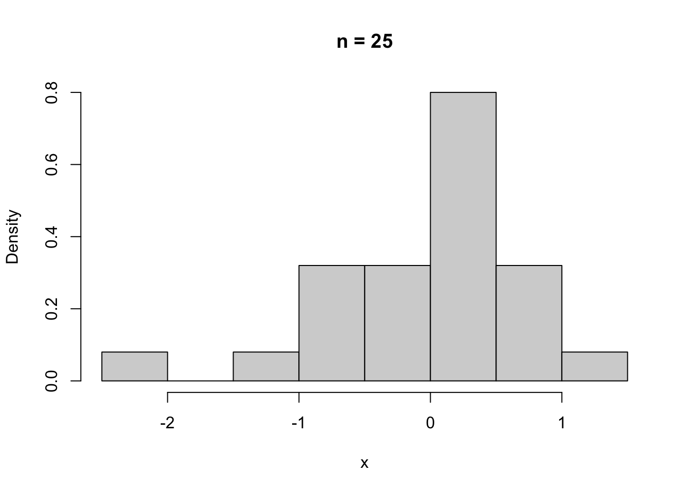
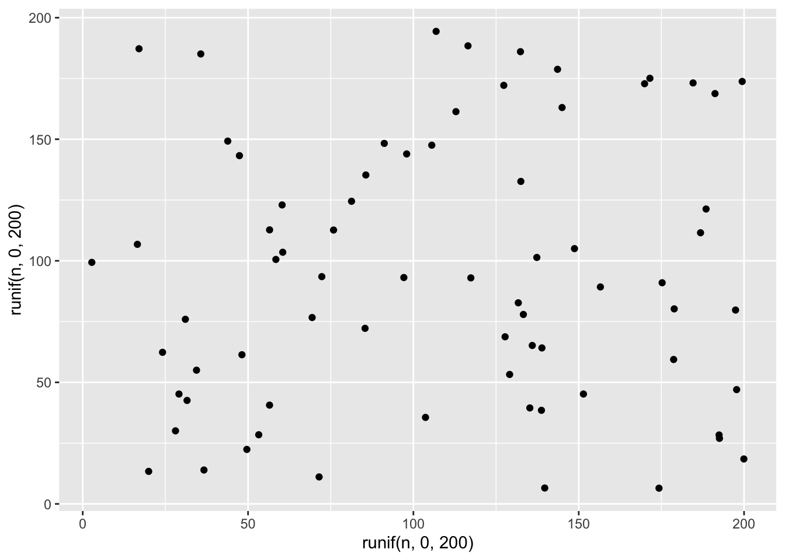
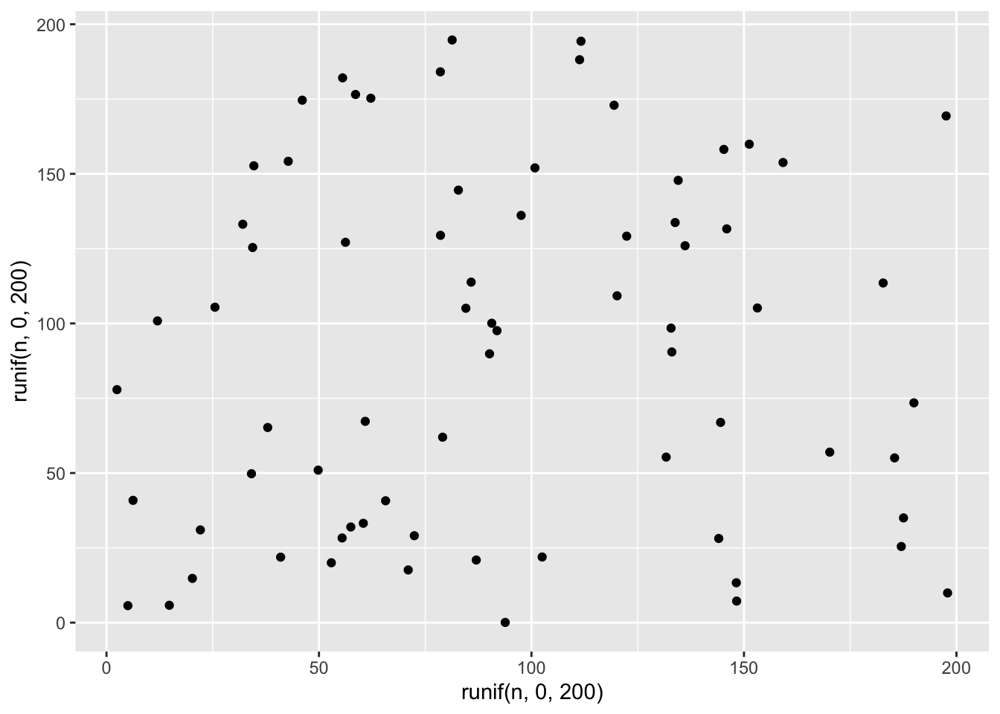
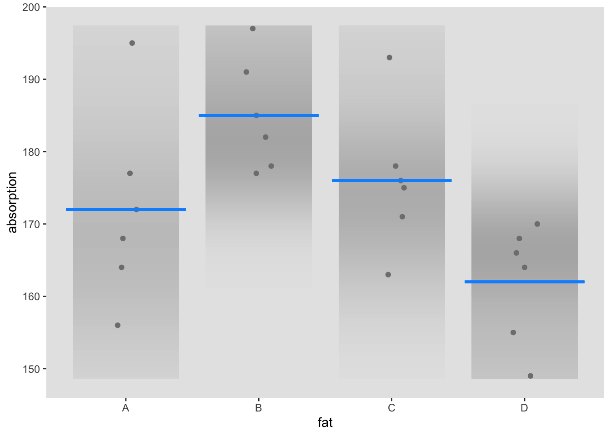
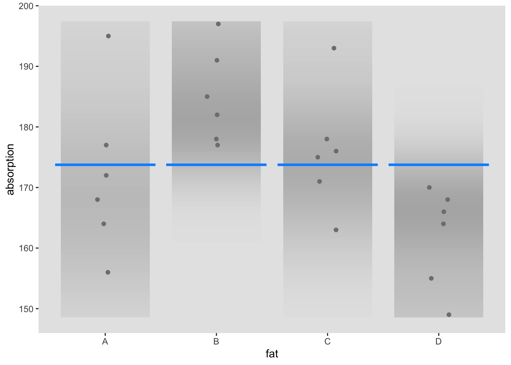

1.1 Examples
In order to motivate the ideas and issues to be discussed in this chapter, some illustrative examples are given below. In each case we will begin by thinking carefully about the structure of the data and the sources of variability. As ever, appropriate visualisations will help.
1.1.1 The manufacture of penicillin
Example: The manufacture of penicillin
In a historical experiment, four different processes for the manufacture of penicillin were compared. One issue is that an important raw material, corn steep liquor, can be quite variable in its composition. To allow for this, five different batches (blends) of corn liquor were used. Fortunately, there was enough raw material in each blend to allow all four manufacturing processes to be applied and the subsequent yields recorded. Principal interest lies in whether there are any identifiable differences among the manufacturing processes, but the size of the variation in the blends is also of secondary interest.The data are reported in Box & Hunter (1978), Statistics for Experimenters. The dataset is available in the
penicillindataframe in thefarawaypackage.
The dataset is available in the penicillin dataframe in the faraway package.
## 'data.frame': 20 obs. of 3 variables:
## $ treat: Factor w/ 4 levels "A","B","C","D": 1 2 3 4 1 2 3 4 1 2 ...
## $ blend: Factor w/ 5 levels "Blend1","Blend2",..: 1 1 1 1 2 2 2 2 3 3 ...
## $ yield: num 89 88 97 94 84 77 92 79 81 87 ...Here is an initial plot of the which aims to include all the different sources of variation. The effect of treatment on yield is the main focus, but the variability associated with the different blends is also represented by the use of separate lines and colours to connect the observations which arise from the same blend. It looks as though there is substantial blend variability, as the lines are somewhat separated, but it is not clear whether there are any systematic differences among the treatments.

A particular issue we need to consider is whether we are building a model which describes the effects associated with the particular blends used in this study or a model which uses the information available to describe the patterns of variation across the wider population of blends.
1.1.2 Childhood growth
Example: Childhood growth
Potthoff and Roy (1964) report data from an experiment where the distance between two anatomical points on the head was meaasured for a number of children, both males and females, over several years. How should we model the underlying growth patterns?The data are available in the
Orthodontdataframe in thenlmepackage.
Inspection of the data reveals a simple structure, with variables distance, age, Subject and Sex. The plot below confirms growth with age, as we would expect. There is also a suggestion that boys are slightly larger than girls, on average, at all the ages considered. Again, this is not surprising. Connecting the observations from each subject by lines emphasises that these data points are linked. This needs to be suitably reflected in the model we build. As in the previous example, is our model for these particular subjects or for the wider population?
## Classes 'nfnGroupedData', 'nfGroupedData', 'groupedData' and 'data.frame': 108 obs. of 4 variables:
## $ distance: num 26 25 29 31 21.5 22.5 23 26.5 23 22.5 ...
## $ age : num 8 10 12 14 8 10 12 14 8 10 ...
## $ Subject : Ord.factor w/ 27 levels "M16"<"M05"<"M02"<..: 15 15 15 15 3 3 3 3 7 7 ...
## $ Sex : Factor w/ 2 levels "Male","Female": 1 1 1 1 1 1 1 1 1 1 ...
## - attr(*, "outer")=Class 'formula' language ~Sex
## .. ..- attr(*, ".Environment")=<environment: R_GlobalEnv>
## - attr(*, "formula")=Class 'formula' language distance ~ age | Subject
## .. ..- attr(*, ".Environment")=<environment: R_GlobalEnv>
## - attr(*, "labels")=List of 2
## ..$ x: chr "Age"
## ..$ y: chr "Distance from pituitary to pterygomaxillary fissure"
## - attr(*, "units")=List of 2
## ..$ x: chr "(yr)"
## ..$ y: chr "(mm)"
## - attr(*, "FUN")=function (x)
## ..- attr(*, "source")= chr "function (x) max(x, na.rm = TRUE)"
## - attr(*, "order.groups")= logi TRUElibrary(ggplot2)
ggplot(Orthodont, aes(age, distance, group = Subject, col = Sex)) + geom_line()
ggplot(Orthodont, aes(age, distance, group = Subject, col = Sex)) + geom_line() +
facet_wrap(~ Subject)
1.1.3 The strength of paste
Example: The strength of paste
A company uses a chemical paste in one of its production processes and receives deliveries of the paste in batches. The quality control department of the company is concerned about the variability in the strength of paste and decided to investigate. Ten batches of paste were randomly selected for a number of deliveries (one batch is received per delivery). From each of the batches a random sample of three casks was selected and two random determinations were made from random samples from each cask.Where does most of the variability lie – at the batch, cask or individual measurement level?
Data source: O.L. Davies and P.L. Goldsmith (eds), Statistical Methods in Research and Production, 4th ed., Oliver and Boyd, (1972), section 6.5.
The data are available in the
Pastesdataframe in thelme4package. The variables of interest arestrength,batchandcask.
The data are plotted below in two different forms. We are used to viewing plots to identify systematic effects such as changes in means. It is more difficult to compare the sizes of variations. A further special feature of the data is that the cask variation is nested inside the batch variation. We should be careful to respect the hierarchical nature of the data structure in any model we construct.
data(Pastes, package = 'lme4')
ggplot(Pastes, aes(strength, batch, col = cask)) + geom_point()
ggplot(Pastes, aes(strength, cask)) + geom_point() +
facet_wrap(~ batch)
1.1.4 Common features
A common feature of all these examples is that the data structure creates links between different observations. In the penicillin data, there are several groups which are formed by the observations made on the same blend. In the Orthodont data, there are groups created by repeated observations over time on the same subject. In the Pastes data, the grouping is created in a hierarchical manner as observation within cask within batch. The links created by these groupings should be respected in our model.
In addition, we would like to construct models which treat some sources of variation as random samples of the variation present in the wider population. This is what we mean by random effects.